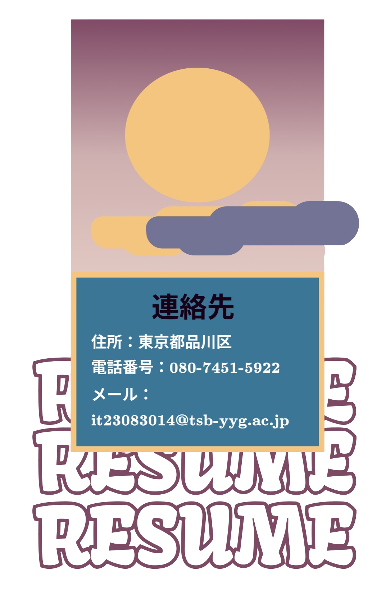

モロッコのカサブランカ出身です。2022年4月、日本に初めて来ました。
専門学校の2年生で、ITビジネス学科プログラマー専攻学生です。
プログラミングに情熱を傾けながら、ゲーム、アート、Webデザイン にも 興味を持っています。
ものづくりが大好きで、独学でスキルを磨いてきました。
現在、日本に住みながら就職活動をしています。
専門学校の2年生で、ITビジネス学科プログラマー専攻学生です。
プログラミングに情熱を傾けながら、ゲーム、アート、Webデザイン にも 興味を持っています。
ものづくりが大好きで、独学でスキルを磨いてきました。
現在、日本に住みながら就職活動をしています。


Education
学歴
2017年/9月-2020年/7月
2021年/4月-2023年/3月
2023年/4月-2025年/3月
Technical Skills
スキル
デザインツール：
Photoshop,Illustrator,Figma,XDフロント エンド web 開発
HTML,CSS,Javascriptバックエンド開発
Java,PHP,MYSQL,SQL,Pythonプログラミング言語
C生産性向上ツール
Powerpoint,Word,ExcelLanguages
言語
アラビア語
& モロッコ語
(ダリジャ)
& モロッコ語
(ダリジャ)
ネイティブ
英語
TOEIC 840点
日本語
上級
フランス語
ネイティブ, Dalf C1

My Projects!
ゲーム 開発:
私が初めて作ったゲームを紹介できることを光栄に思います！この結果を達成するために、数ヶ月間独学でJavaでのゲームプログラミングを学びました。
この大変な迷路で時間内に宝物に到達することが、エキサイティングな部分です！ こちらがゲームのプレビューです！
主人公とゲームの名前は ”クラゲちゃん” です！

ゲームの目的は、鍵を集めて宝物へと続く扉を開くことです。
この大変な迷路で時間内に宝物に到達することが、エキサイティングな部分です！ こちらがゲームのプレビューです！
WEB 開発:

このプロジェクトは、専門学校の1年目に、HTMLとCSSを数ヶ月学んだだけで作りました。学んだことをすべて見せるために全力を尽くし、これによってウェブ開発がどれだけ楽しいかを実感しました。
「The Wizarding World of Harry Potter」という画像をクリックすると、メインページに戻ります。また、「作品紹介」と「キャラクター」をクリックすると、それらのセクションについて詳しく見ることができます。
このボタンをクリックすると、プロジェクトをインターネットでライブで見ることができます！
Click Me!
お時間をいただきありがとうございます★